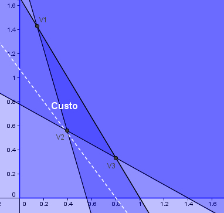

Como montar sua dieta

A dieta
Agora, você verá que, em situações como a estudada aqui, o menor custo possível sempre estará no vértice. O mesmo acontece para o maior custo possível.
A reta que representa o gasto de R$2,00 está representada ao lado. Todos os pontos que estão nessa reta representam dietas com custo igual R$2,00.
Agora, movendo o custo no seletor no quadro ao lado, observe o comportamento das retas que se formam: elas são todas paralelas umas às outras. E, quando o custo aumenta, a reta sempre se move na mesma direção. Quando o custo diminui, ela se move na direção oposta.
Portanto, para encontrar a dieta com menor custo, deve-se olhar para a última reta que corta a região de interesse na direção da diminuição do custo:
Isso sempre acontece em um dos vértices dessa região, a menos que um dos seus lados seja paralelo às retas de custo.
Se você quisesse encontrar a dieta com maior custo, deveria olhar para a última reta que corta a região na direção do aumento do custo.